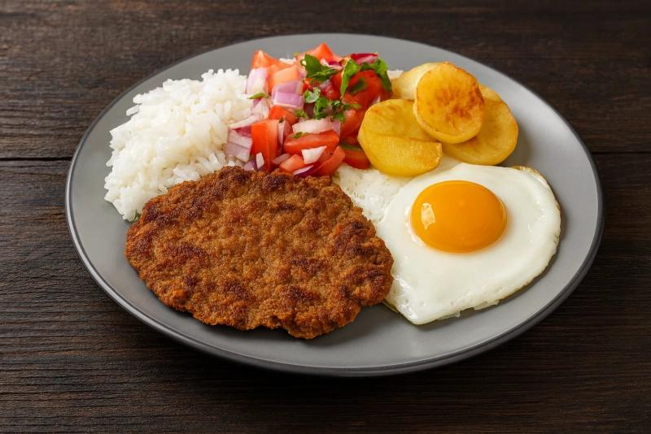
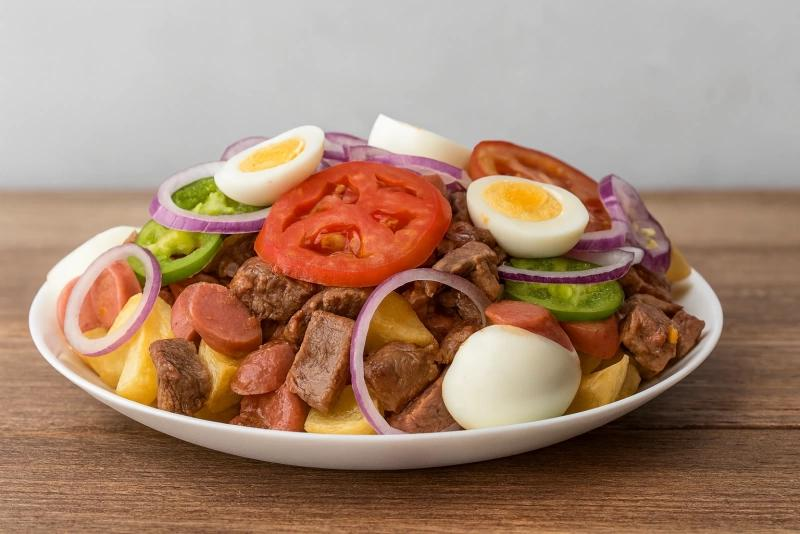
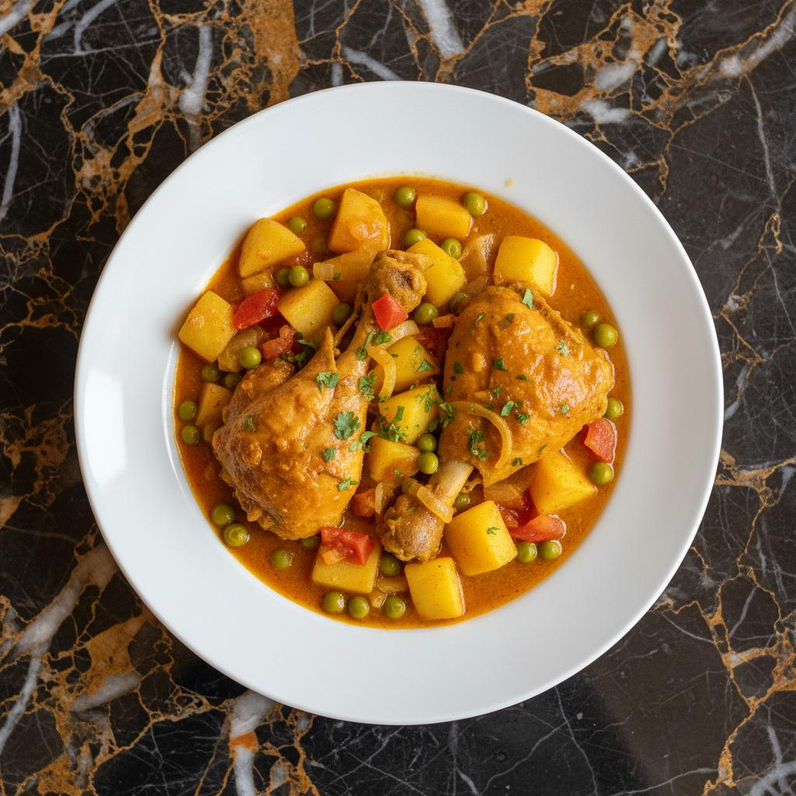
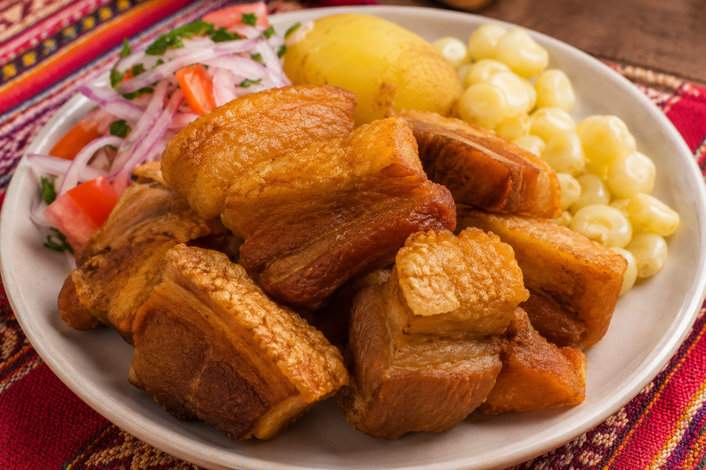
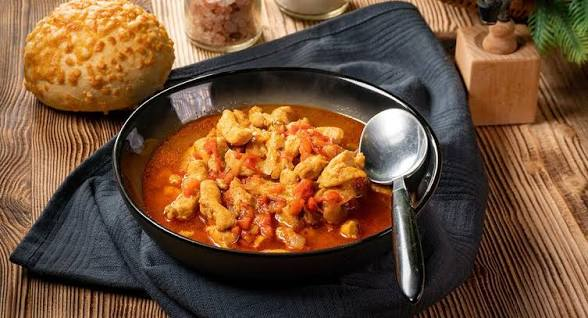
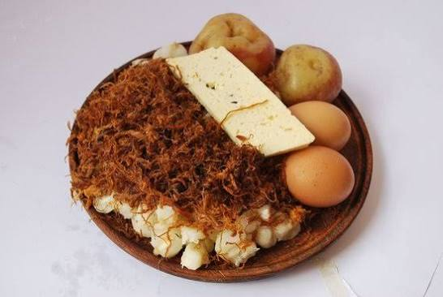
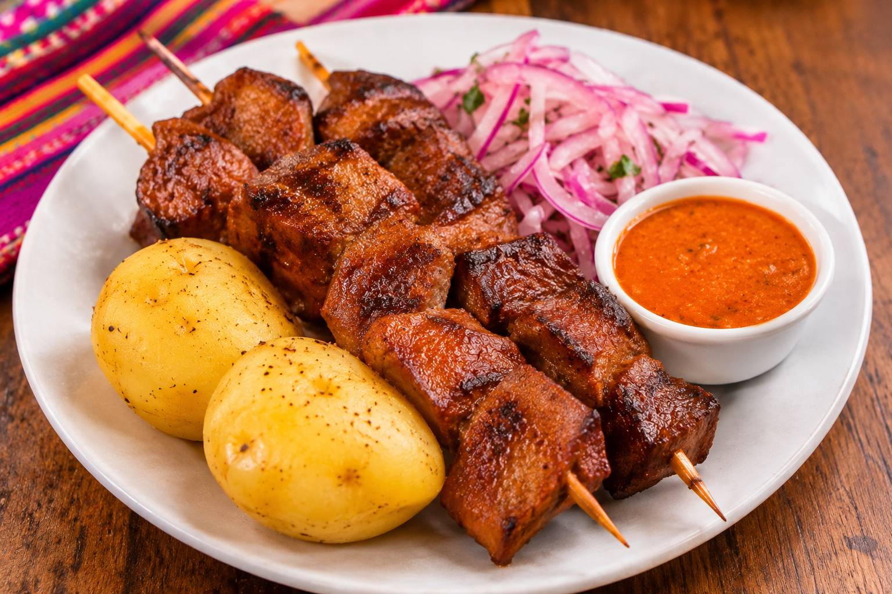
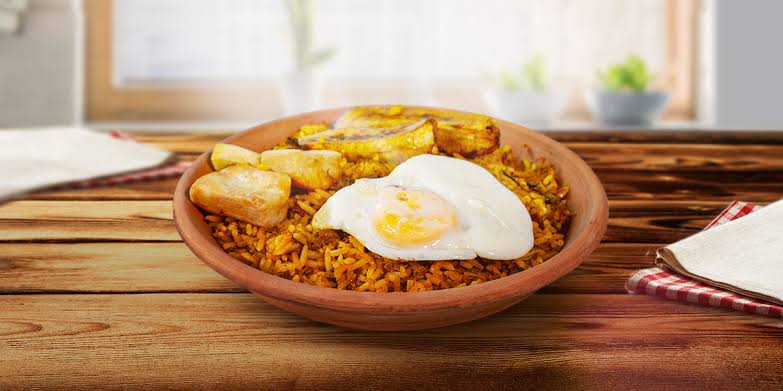
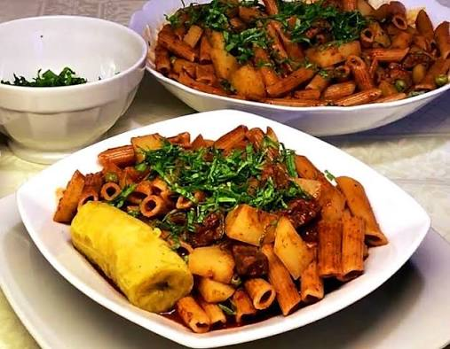

COMIDA BOLIVIANA

Tradicional plato cochabambino.

Una deliciosa tradición boliviana.

Un sabor tradicional de nuestra tierra.

Carne de cerdo acompañada de mote y papa.

Plato tradicional de cerdo con caldo de ají.

Plato típico con charque, mote y papa.

Brochetas acompañadas de papa y salsa de maní.

Arroz preparado con charque y huevo.

Preparación tradicional con fideo, papa y ají.